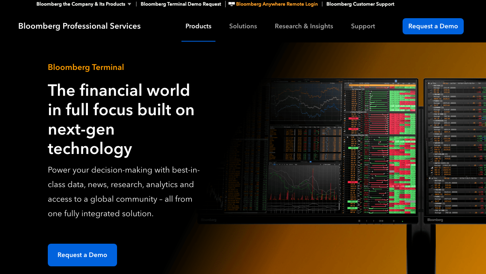
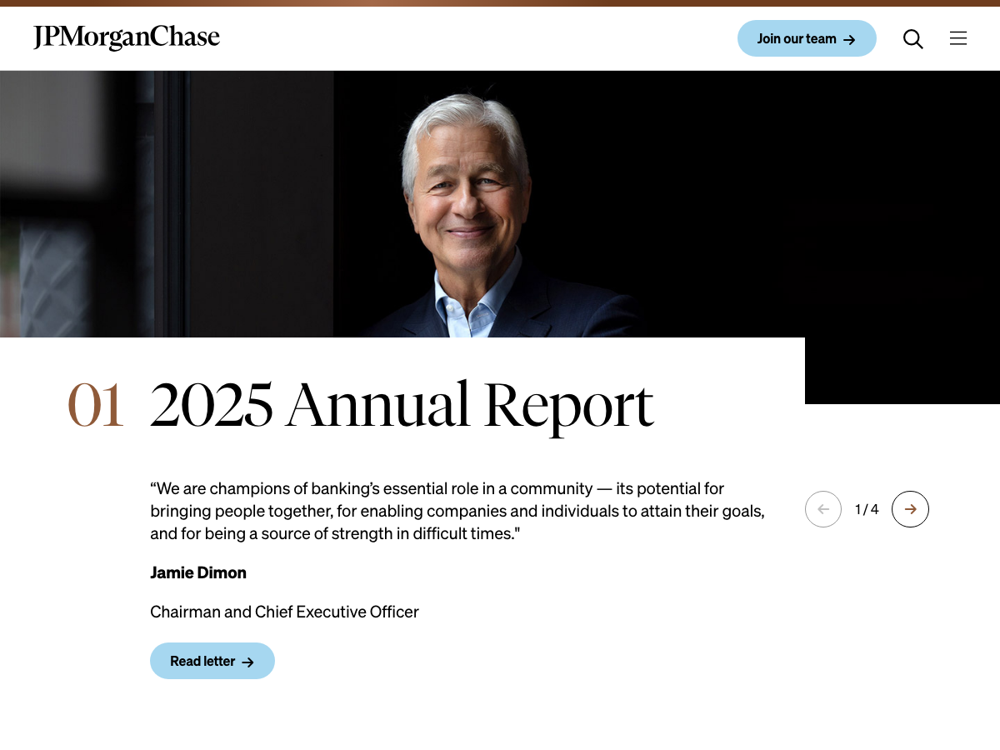
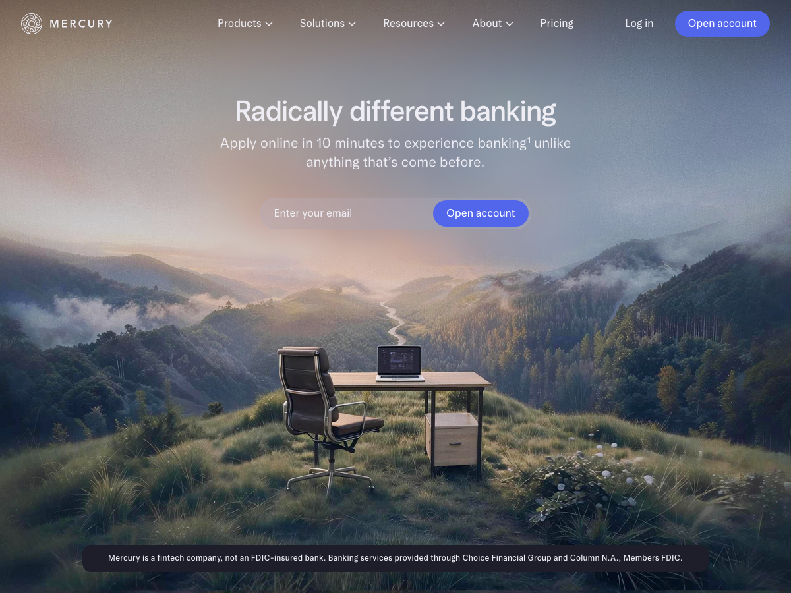
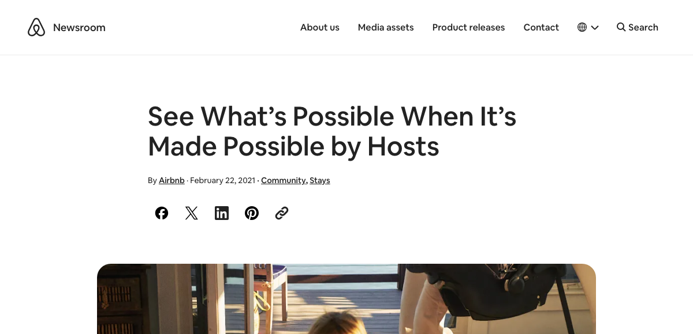
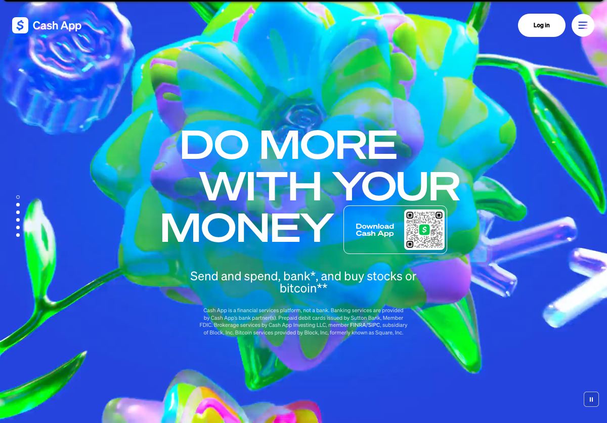
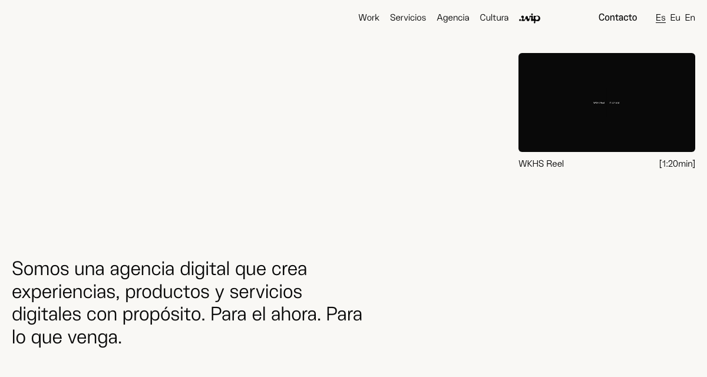

Per the handoff brief, Sangam draws on "Dongwon (corporate navy modernism)"; Maina draws on "Workoholics WIP (editorial, photographic, human)." Below: 3 additional real reference points per direction, each with a specific, borrowable detail — not a vibe, a technique.
Institutional, restrained, navy-and-brass — quiet authority through material and structure, not decoration.

bloomberg.com/professionalThe terminal kept its dark, high-density, single-accent-color screen for 40+ years because traders read it as a mark of professional seriousness — complexity signals capability, not clutter.

jpmorganchase.comTheir newest identity paired a bolder serif with rounded terminals and added a warm brown to an otherwise cold-blue system "for reliability" — softening institutional blue without losing gravitas. The octagon mark still reads as a vault.

mercury.comMercury builds trust through restraint: soft gradients, minimal visual noise, sensitive data hidden by default, and marketing copy stripped of corporate filler. Premium reads as "nothing to prove."
Warm, candid, documentary — real people over stock people; the photography carries the brand more than the type does.

news.airbnb.comReal photos shot on real trips by working documentary photographers (Christopher Anderson, Magdalena Wosinska among 100+), edited with warm, nostalgic color grading and classic-song scoring — never staged model shoots.

cash.appMoves fintech marketing away from feature/convenience messaging toward people-first storytelling: observational films where the product is woven into the action rather than being the subject, showing how small transactions sustain human bonds.

workoholics.esWIP's own visual language centers the "ever-changing, intense, deeply human" moment of creative work-in-progress — imperfect, mid-process, expressive faces rather than polished portraits, explicitly named in the handoff brief as Maina's direct inspiration.
Thumbnails above are our own screenshots of each reference's public website (captured July 2026; Bloomberg and Cash App via the Internet Archive's Wayback Machine), stored locally in assets/refs/ — used strictly as internal design-research references, not as assets for any published material. For production, license or shoot originals per the "borrow" notes rather than reusing the referenced brands' own photography.